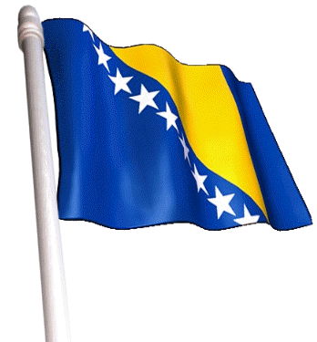

Información tomada de Nacion.com
Bosnia, un país bloqueado, vota el domingo en elecciones generales
 Sarajevo. AFP Los bosnios votarán el domingo
en unas elecciones generales que serán
determinantes para el futuro de su país, que
sigue profundamente dividido por sus
comunidades y que está empantanado desde
hace cuatro años en las reformas pedidas por la
Unión Europea.
Sarajevo. AFP Los bosnios votarán el domingo
en unas elecciones generales que serán
determinantes para el futuro de su país, que
sigue profundamente dividido por sus
comunidades y que está empantanado desde
hace cuatro años en las reformas pedidas por la
Unión Europea.
Casi 15 años después del fin de la guerra
intercomunitaria de 1992-95, la actual campaña
electoral estuvo dominada, tanto entre los musulmanes como entre los
serbios, por una retórica nacionalista.En la República Srpska (RS), el
hombre fuerte de la entidad serbia, el primer ministro Milorad Dodik, ha agitado en los últimos
meses la amenaza de la independencia si se cuestionaba la autonomía de la RS en el seno
de Bosnia.
“Lo mejor para Bosnia es que nos separemos en forma amigable”, estima Dodik, que debe ser
elegido sin dificultades como presidente de la RS. Del lado musulmán, el presidente en ejercicio de
la presidencia colegiada de Bosnia, Haris Silajdzic, hizo duras declaraciones contra los serbios de
Bosnia, acusándolos de impedir el progreso del país hacia Europa, fustigando de paso una eventual
secesión de la RS.
Silajdzic disputa la presidencia colegial a Bakir Izetbegovic, un moderado, que preconiza por su
lado el diálogo con los serbios de Bosnia. Se trata del hijo de Alija Izetbegovic, una figura
emblemática de la comunidad musulmana de Bosnia durante la guerra, que condujo al país a
declarar su independencia de Yugoslavia. En cuanto a los croatas, asociados a los musulmanes en
la Federación Croato-musulmana, sus principales partidos preconizan la creación de una entidad
propia. Entre los candidatos para la plaza de copresidente musulmán resalta el magnate mediático
local Fahrudin Radoncic, un defensor de intereses nacionales.
Alrededor de 3,1 millones de electores son convocados a votar el 3 de octubre para renovar los
diferentes órganos de este país singular, que cuenta con una estructura institucional compleja. En
esta ocasión se elegirá a los miembros de la presidencia tripartita del país (musulmanes, croatas y
serbios), a los miembros del Parlamento Central y a los de las asambleas de las dos entidades que
componen Bosnia, la República Srpska y la Federación Croato-musulmana. Estas instancias están
unidas por débiles instituciones centrales que los europeos quisieran que se fortalezca para facilitar
las reformas necesarias para que el país pueda avanzar hacia la UE.
Los musulmanes también quieren una centralización, exasperados por la autonomía de la RS. Desde
las anteriores elecciones generales de 2006, las reformas en Bosnia quedaron bloqueadas. Bajo la
presión de la comunidad internacional, el país había llegado a unificarse en algunos aspectos, en
particular en cuanto a su ejército, sus aduanas y su sistema fiscal.“El único modo de salir del
estancamiento puede ser una participación más decidida de la comunidad internacional o bien la
entrada de un nuevo partido en el gobierno”, dijo el analista Tanja Topic. “Sin embargo, también
hay una cierta fatiga de la comunidad internacional con respecto a Bosnia”, advirtió otro experto,
Haris Abaspahic.
Según un tercer analista, Valentin Inzko, Bosnia se encuentra en la encrucijada y los políticos deben
decidir si quieren o no respetar el deseo de más del 80% de los electores, es decir Europa. Por su
lado, los estadounidenses y los europeos lanzaron ayer un llamado urgente a los líderes bosnios
para que lleguen a compromisos después de las elecciones generales del domingo, para avanzar en
las reformas necesarias. Srecko Latal, analista de la organización de prevención de conflictos
International Crisis Group (ICG)opinó: “la comunidad internacional debería adoptar un enfoque
estratégico a largo plazo con respecto a Bosnia”.
